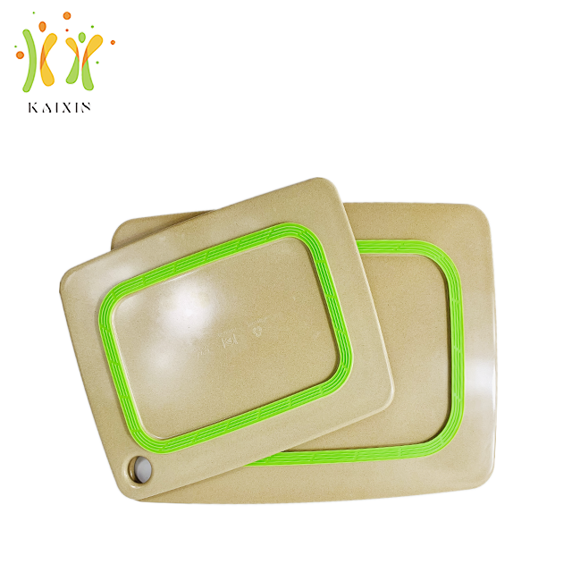
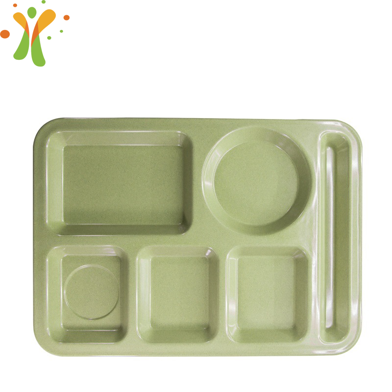
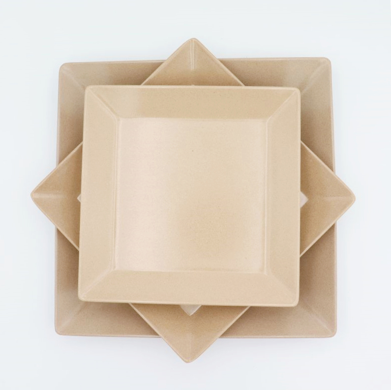
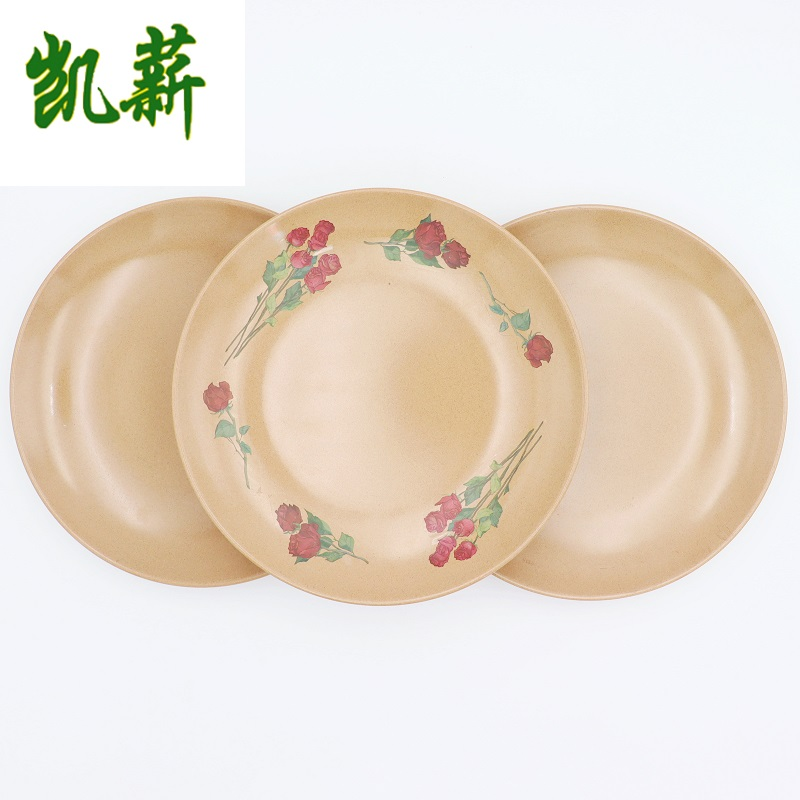
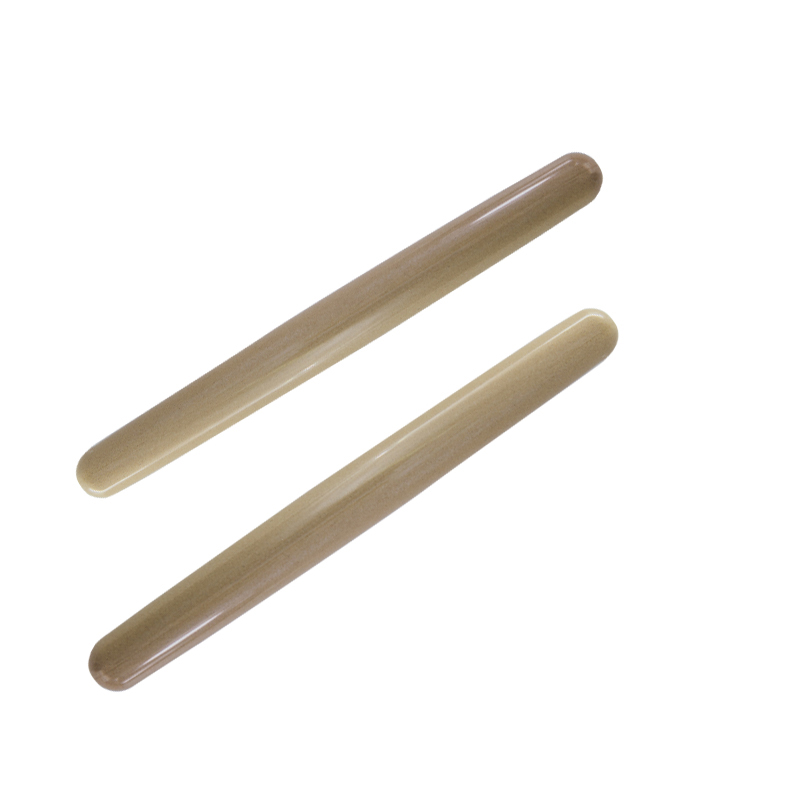

10 product lines, fully customizable in color, size and packaging. Click any product for specs and OEM options.

Knife-scratch resistant cutting board in 2 sizes, easy to clean.
View details →
4 sizes 10–16oz, lightweight & heat-insulating.
View details →
Elegant 410mm tray for serving & presentation.
View details →
3-section 355mm plate, perfect for meals & bento.
View details →
Compact 178mm reusable meal container.
View details →
3 sizes 205–280mm, modern square design.
View details →
4 sizes 172–252mm, classic dining plate.
View details →
280mm, smooth & lightweight baking tool.
View details →
4 capacities 200–750ml, break-resistant.
View details →
Complete safe tableware set for children.
View details →We do full OEM/ODM. Send us your idea, drawing or sample — we'll develop it for you.
Send Inquiry